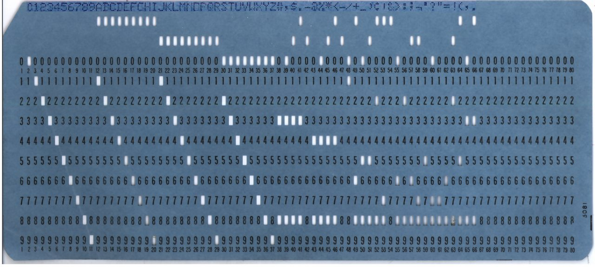
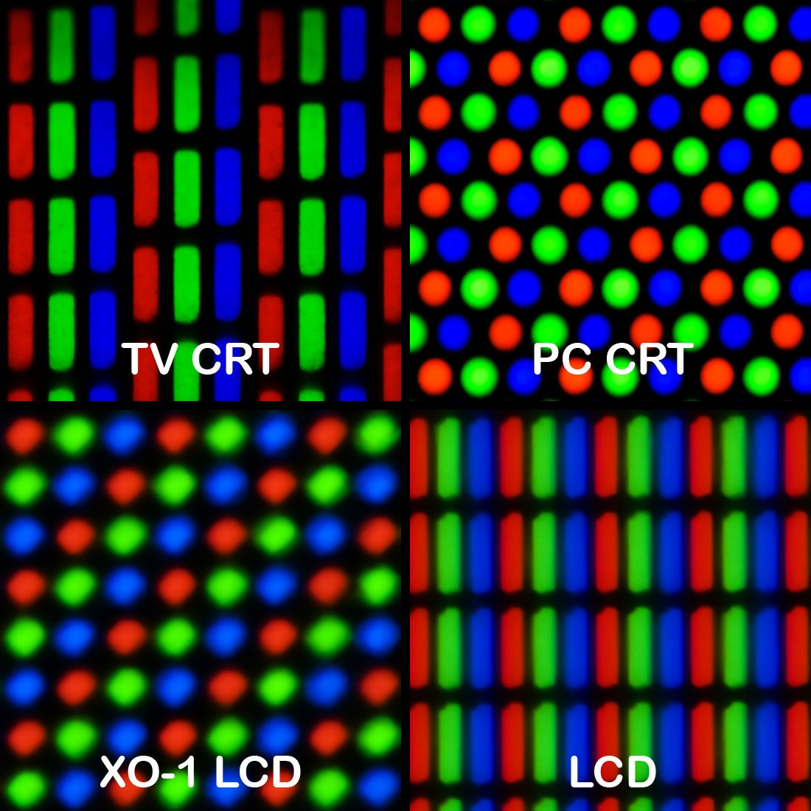

0과 1로 표현하기
비트·숫자·글자·그림
엑셀로 연 주문 목록에서 "주문"이라는 글자가 "二쇰Ц"으로 보입니다. 0.1과 0.2를 더하게 했더니 0.30000000000000004가 나옵니다. 고장처럼 보이지만, 둘 다 컴퓨터가 정해진 규칙대로 움직인 결과입니다. 컴퓨터가 숫자와 글자와 그림을 무엇으로 적어 두는지 알면, 이런 일이 왜 생기고 어디를 고쳐야 하는지 보입니다.
- 비트와 바이트가 무엇인지, 스위치 몇 개로 몇 가지를 나타낼 수 있는지 계산할 수 있습니다.
- 정수가 넘치는 이유와 0.1 + 0.2가 0.3이 아닌 이유를 설명하고, 돈 계산에 쓸 숫자를 고를 수 있습니다.
- 한글이 깨졌을 때 "어떤 규칙으로 저장했고, 어떤 규칙으로 읽었는가"를 따져 볼 수 있습니다.
- 주소와 값, GB와 GiB, 32비트와 64비트처럼 헷갈리는 말을 구분할 수 있습니다.
2.1비트: 켜거나 끄거나, 스위치 하나#
1장에서 CPU 칩 안에 스위치가 수십억 개 들어 있다고 했습니다. 메모리와 저장장치도 마찬가지입니다. 컴퓨터는 결국 아주 작은 스위치를 엄청나게 많이 모아 놓은 기계입니다.
전등 스위치를 떠올려 봅시다. 스위치 하나는 꺼짐과 켜짐, 두 가지 상태만 가집니다. 꺼짐을 0, 켜짐을 1이라고 적기로 하면, 이 스위치 하나가 바로 비트(bit)입니다. 컴퓨터가 다루는 가장 작은 정보 단위입니다.
왜 하필 두 가지일까요? 전기 신호를 "아주 약함, 약함, 보통…" 하고 열 단계로 나누면, 신호가 조금만 흔들려도 옆 단계와 헷갈립니다. "있다"와 "없다" 둘로만 나누면 웬만큼 흔들려도 틀리지 않습니다. 단순해서 튼튼한 것입니다.
스위치 하나로는 "예, 아니요"밖에 적지 못합니다. 하지만 여러 개를 나란히 놓으면 이야기가 달라집니다.
하나 늘 때마다 두 배이니, 스위치 n개로는 2를 n번 곱한 만큼의 서로 다른 상태를 만들 수 있습니다. 기호로는 이라 쓰고 "2의 n제곱"이라고 읽습니다.
비트 여덟 개를 한 묶음으로 부르는 이름이 바이트(byte)입니다. 1바이트로는 256가지를 구분할 수 있습니다. 메모리와 파일의 크기를 잴 때 쓰는 기본 단위가 이 바이트입니다. 1장에서 본 16GB 메모리는 바이트가 백억 개 넘게 늘어선 것입니다.

컴퓨터 안의 모든 것은 스위치 줄입니다. 그 줄을 어떤 약속으로 읽느냐에 따라 숫자도, 글자도, 그림도 됩니다.
2.22진수와 16진수: 스위치 줄을 숫자로 읽기#
먼저 스위치 줄을 숫자로 읽는 약속부터 봅시다. 우리가 쓰는 10진수에서 345는 "100이 3개, 10이 4개, 1이 5개"라는 뜻입니다. 자리가 하나 올라갈 때마다 값이 열 배가 됩니다.
스위치는 0과 1 두 가지뿐이니, 자리가 올라갈 때마다 값이 두 배가 되게 하면 됩니다. 오른쪽부터 1, 2, 4, 8, 16, 32, 64, 128입니다. 이렇게 적은 수가 2진수(binary)입니다. 읽는 법은 하나뿐입니다. 켜진 자리의 값만 더합니다.
01000001을 읽는 법. 켜진 자리의 값을 더하면 65이고, 네 칸씩 묶어 16진수로 적으면 41입니다.01000001은 64 자리와 1 자리가 켜져 있으니 64 + 1 = 65입니다. 여덟 개를 모두 켠 11111111은 128 + 64 + 32 + 16 + 8 + 4 + 2 + 1 = 255입니다. 1바이트에 담기는 수가 0부터 255까지인 이유입니다.
16진수: 길어서 줄여 적기
2진수는 사람이 읽기에 너무 깁니다. 그래서 네 칸씩 묶어 한 글자로 줄여 적습니다. 네 칸으로 만들 수 있는 값은 0부터 15까지 16가지입니다. 숫자는 9까지밖에 없으니 10부터 15까지는 A, B, C, D, E, F로 적습니다. 이것이 16진수(hexadecimal)입니다.
1바이트는 네 칸짜리 묶음 두 개이므로 16진수 두 글자로 딱 떨어집니다. 0100 0001은 4와 1, 곧 41입니다. 10진수 41과 헷갈리지 않도록 코드에서는 0x41처럼 앞에 0x를 붙입니다.
| 2진수 | 10진수 | 16진수 |
|---|---|---|
0000 1010 |
10 | 0x0A |
0100 0001 |
65 | 0x41 |
1111 1111 |
255 | 0xFF |
색 코드 #FF8800이나 오류 창에 뜨는 0x80070005 같은 값이 모두 16진수입니다. 암호가 아니라 바이트를 짧게 적은 것뿐입니다.
Python을 켜고 bin(65), hex(255), int("ff", 16)을 차례로 입력해 보세요. 같은 값이 2진수, 16진수, 10진수로 바뀌어 나옵니다.
2.3정수: 칸이 꽉 차면 처음으로 돌아갑니다#
종이에는 숫자를 얼마든지 길게 쓸 수 있습니다. 컴퓨터는 다릅니다. 숫자 하나에 스위치를 몇 개 쓸지 미리 정해 둡니다. 소수점이 없는 수인 정수(integer)는 보통 8, 16, 32, 64비트 가운데 하나에 담습니다. 칸 수가 정해지면 담을 수 있는 범위도 정해집니다.
| 칸 수 | 0 이상만 담을 때 | 음수도 담을 때 |
|---|---|---|
| 8비트 | 0 ~ 255 | −128 ~ 127 |
| 32비트 | 0 ~ 약 43억 | 약 −21억 ~ 21억 |
| 64비트 | 0 ~ 약 1844경 | 약 −922경 ~ 922경 |
음수까지 담으려면 맨 앞 비트를 부호 표시에 씁니다. 그래서 칸 수가 같아도 양수 쪽 범위는 절반으로 줄어듭니다. 표의 "경"은 조의 만 배입니다.
범위를 넘기면 어떻게 될까요? 자동차의 주행 거리계가 999999 다음에 000000으로 돌아가는 것과 같은 일이 벌어집니다. 8비트 칸에 든 255에 1을 더하면 256이 아니라 0이 됩니다. 이것이 오버플로(overflow)입니다.
오버플로는 많은 언어에서 오류 메시지도 없이 조용히 일어나기 때문에 위험합니다. 체력이 250인 캐릭터가 10을 회복했는데 체력이 4가 되어 버리는 식입니다(250 + 10 = 260, 260 − 256 = 4).
유튜브는 조회수를 32비트 정수로 세다가, '강남스타일'의 조회수가 그 한계인 약 21억 회를 넘보자 64비트로 바꿨다고 밝힌 적이 있습니다. 넉넉해 보이던 칸도 언젠가 모자랄 수 있습니다.
Python의 정수는 칸을 알아서 늘려 주므로 넘치지 않습니다. 하지만 Java, C#, Go 같은 언어와 데이터베이스의 숫자 칸은 크기가 고정입니다. 주문 번호, 조회수, 금액처럼 계속 커지는 값을 32비트 칸에 담고 있지 않은지 살펴보세요.
나머지 연산: 일부러 돌게 만들기
끝에 닿으면 처음으로 돌아가는 성질을 일부러 쓰기도 합니다. 시계가 그렇습니다. 10시에서 5시간이 지나면 15시가 아니라 3시입니다. 15를 12로 나눈 나머지가 3이기 때문입니다.
나머지를 구하는 계산을 나머지 연산(modulo)이라 하고, 대부분의 언어에서 % 기호로 씁니다. 15 % 12는 3입니다.
players = ["민지", "준호", "서연", "태윤"]
turn = 3 # 지금은 태윤 차례
turn = (turn + 1) % len(players) # (3 + 1) % 4 = 0
print(players[turn]) # 민지네 사람은 0번부터 3번까지 번호를 받았습니다. 3번 다음 차례는 4번이 아니라 0번이어야 하는데, % 4가 4를 0으로 되돌려 줍니다. 요일, 각도, 되풀이되는 재생 목록처럼 "끝 다음이 처음"인 것은 모두 이렇게 다룹니다.
한 걸음 더음수의 나머지는 언어마다 다릅니다
차례를 거꾸로 돌리는 (turn - 1) % 4는 turn이 0일 때 -1 % 4가 됩니다. 이 값은 Python에서는 3이지만 JavaScript, Java, C에서는 −1이라서 없는 차례를 가리키게 됩니다. (turn - 1 + 4) % 4처럼 한 바퀴만큼 먼저 더하면 어느 언어에서나 안전합니다.
2.4실수: 0.1 + 0.2가 0.3이 아닌 이유#
Python에게 쉬운 덧셈을 하나 시켜 봅시다.
>>> 0.1 + 0.2
0.30000000000000004
>>> 0.1 + 0.2 == 0.3
FalsePython이 고장 난 것이 아닙니다. JavaScript에서도 똑같습니다. 덧셈 결과가 0.3보다 아주 조금 커서, 둘째 줄의 "0.3과 같은가?"라는 물음에 거짓(False)이 나옵니다.
10진수로 3분의 1을 적어 봅시다. 0.3333…이 끝없이 이어지므로 어디선가 잘라야 하고, 잘린 값은 3분의 1과 아주 조금 다릅니다. 2진수에도 이런 수가 있는데, 하필 0.1이 그렇습니다. 2진수의 소수 자리는 2분의 1, 4분의 1, 8분의 1, 16분의 1…을 뜻합니다. 이 값들을 아무리 골라 더해도 0.1에 딱 맞출 수 없습니다.
눈금이 새겨진 자를 떠올리면 쉽습니다. 컴퓨터의 소수는 눈금 위의 값만 가질 수 있습니다. 0.1은 눈금과 눈금 사이에 떨어지므로 가장 가까운 눈금으로 옮겨 적습니다.
이렇게 소수점이 있는 수를 정해진 비트 안에 가장 가까운 값으로 담는 방식을 부동소수점(floating point)이라고 합니다. 여러 언어에서 float나 double이라고 부르는 실수가 이것입니다. 64비트 실수는 앞에서부터 15자리쯤까지 정확하므로 거리, 속도, 온도 같은 측정값에는 충분합니다. 문제는 딱 맞아야 하는 값에 쓸 때 생깁니다.
돈은 실수로 계산하지 않습니다
19.99달러를 센트로 바꾸려고 100을 곱하면 1999가 아니라 1998.9999999999998이 나옵니다. 여기서 소수점 아래를 버리면 1998센트가 되어 1센트가 사라집니다. 이런 오차가 주문 수만 건에 쌓이면 장부가 맞지 않습니다.
해법은 두 가지입니다.
- 가장 작은 단위의 정수로 다룹니다. 19.99달러는 1999센트, 원화는 원 단위 정수로 저장합니다. 정수끼리의 덧셈과 곱셈은 정확합니다.
- 10진수 전용 숫자를 씁니다. Python의
Decimal이나 데이터베이스의DECIMAL은 10진수 그대로 계산합니다.
0.1을 열 번 더한 값은 1.0이 아니라 0.9999999999999999입니다. 그래서 t == 1.0 같은 조건은 영영 참이 되지 않을 수 있습니다. t >= 1.0처럼 범위로 묻거나, Python의 math.isclose(a, b)처럼 "차이가 아주 작은가"를 묻습니다.
한 걸음 더큰 수에 작은 수를 더하면 작은 수가 사라집니다
실수의 눈금은 수가 커질수록 성겨집니다. 1경(1 뒤에 0이 16개, 코드에서는 1e16) 근처에서는 눈금 간격이 2입니다. 그래서 (1e16 + 1) - 1e16은 0이 되고, 순서만 바꾼 (1e16 - 1e16) + 1은 1이 됩니다. 수학에서는 같은 식이 계산 순서에 따라 다른 답을 냅니다.
JavaScript의 숫자는 정수처럼 보여도 모두 64비트 실수입니다. 약 9007조를 넘는 정수는 눈금 사이에 떨어져 끝자리가 바뀔 수 있습니다. 서버가 보내 준 아주 큰 ID는 숫자가 아니라 문자열로 다루는 편이 안전합니다.
2.5글자: 번호를 붙이고 바이트로 적기#
글자를 스위치로 적으려면 글자마다 번호를 붙여야 합니다. "A는 65번, B는 66번" 하는 식입니다. 이런 번호표 가운데 가장 오래 쓰인 것이 ASCII(아스키)입니다. 영어 알파벳과 숫자, 기호 등 128개에 번호를 붙였고, 한 글자가 1바이트에 들어갑니다.
128개로는 한글도 한자도 담지 못합니다. 그래서 나라마다 자기 번호표를 따로 만들었습니다. 한국의 CP949가 그 하나입니다. 번호표가 다른 컴퓨터끼리는 글자가 엉뚱하게 보였습니다. 이 혼란을 끝내려고 세계의 모든 글자에 번호를 하나씩 붙인 것이 유니코드(Unicode)입니다. 이 번호를 코드 포인트(code point)라 하고 U+AC00처럼 16진수로 적습니다. '가'는 U+AC00, 10진수로 44032번입니다.
번호를 정했으면, 그 번호를 바이트로 어떻게 적을지도 정해야 합니다. 이 규칙이 인코딩(encoding)입니다. 오늘날 웹과 개발 도구가 기본으로 쓰는 인코딩은 UTF-8입니다. 자주 쓰는 글자는 짧게, 드문 글자는 길게 적습니다.
영문과 숫자는 1바이트, 한글은 3바이트, 이모지는 대부분 4바이트입니다. 그래서 글자 수와 바이트 수는 다릅니다.
s = "가나다"
print(len(s)) # 3 (글자 수)
print(len(s.encode("utf-8"))) # 9 (바이트 수)encode는 글자를 바이트로 바꾸는 명령입니다. 세 글자가 9바이트가 되었습니다. "닉네임은 12바이트까지"라는 제한이 있다면 한글은 네 글자까지만 들어갑니다.
글자가 깨지는 이유
바이트에는 "나는 UTF-8로 적혔다"는 표시가 없습니다. 저장할 때 쓴 규칙과 읽을 때 쓴 규칙이 다르면, 같은 바이트가 엉뚱한 글자로 바뀝니다.
글자가 깨졌어도 데이터는 멀쩡합니다. 틀린 것은 읽는 규칙뿐이므로, 올바른 규칙으로 다시 읽으면 됩니다.
파일을 열 때 open("memo.txt", encoding="utf-8")처럼 인코딩을 밝혀 적으세요. 적지 않으면 컴퓨터 설정에 따라 다른 규칙이 골라질 수 있습니다. AI가 만든 코드에서 이 부분이 빠져 있지 않은지 확인합니다.
한 걸음 더똑같아 보이는 글자가 다를 때 (정규화)
유니코드에서 '가'를 적는 방법은 두 가지입니다. 완성된 한 글자(U+AC00)로 적을 수도 있고, 자음 ㄱ과 모음 ㅏ 두 조각을 이어 적을 수도 있습니다. 화면에는 똑같이 보이지만 바이트가 다르므로, 컴퓨터는 둘을 다른 글자로 봅니다. 맥에서 만든 파일의 이름이 윈도우에서 'ㅎㅏㄴㄱㅡㄹ'처럼 풀려 보이거나, 분명히 있는 이름이 검색되지 않는 까닭입니다.
이럴 때는 비교하기 전에 양쪽을 한 가지 형태로 맞춥니다. 이 작업을 정규화(normalization)라 하고, 완성된 글자 쪽으로 모으는 방식을 NFC라고 부릅니다. JavaScript에서는 이름.normalize("NFC")로 맞출 수 있습니다.
2.6색과 그림: 점 하나에 숫자 세 개#
화면을 아주 가까이서 들여다보면 작은 점들이 바둑판처럼 늘어서 있습니다. 이 점 하나를 픽셀(pixel)이라고 합니다.

픽셀은 빨강(Red), 초록(Green), 파랑(Blue) 세 가지 빛을 섞어 색을 냅니다. 빛마다 밝기를 0부터 255까지, 곧 1바이트로 적으면 점 하나가 3바이트가 됩니다. 이 방식을 세 빛의 머리글자를 따서 RGB라고 합니다. 셋 다 0이면 검정, 셋 다 255이면 흰색입니다.
웹에서 쓰는 색 코드 #FF8800은 이 세 바이트를 16진수로 이어 적은 것입니다. FF는 255, 88은 136, 00은 0입니다.
그림이 숫자 목록이라면 크기도 계산할 수 있습니다. 가로 1920, 세로 1080인 화면 한 장은 약 207만 점이고, 점마다 3바이트이니 약 6.2MB입니다. 1장에서 "20MB짜리 사진 파일이 메모리에서는 200MB가 된다"고 했던 까닭이 이것입니다. 파일은 이 숫자 목록을 압축해 둔 것이고, 화면에 그리려면 다시 점 하나하나로 펼쳐야 합니다.
2.7파일: 같은 바이트, 다른 약속#
숫자, 글자, 색을 차례로 보았습니다. 셋을 꿰는 사실이 하나 있습니다.
바이트는 자기가 무엇인지 스스로 말하지 않습니다.
어느 쪽이 맞는지는 바이트가 아니라 읽는 쪽의 약속이 정합니다. 이 약속을 형식(format)이라고 합니다. 그리고 파일은 바이트를 한 줄로 늘어놓고 이름을 붙인 것입니다. 파일은 크게 두 가지로 나뉩니다.
- 텍스트 파일은 처음부터 끝까지 글자 인코딩 하나로 읽으면 뜻이 통하는 파일입니다.
.txt,.py,.html,.csv가 그렇습니다. 메모장 같은 편집기로 열어 읽고 고칠 수 있습니다. - 바이너리 파일(binary file)은 그 밖의 모든 파일입니다. 사진, 음악, 압축 파일, 실행 파일이 여기에 듭니다. 저마다의 형식에 따라 숫자와 색이 빽빽이 들어 있어서, 그 형식을 아는 프로그램으로 열어야 합니다.
memo.txt 48 65 6C 6C 6F → 글자로 읽으면 Hello
logo.png 89 50 4E 47 0D 0A 1A 0A → 글자로 읽으면 뜻 없는 기호첫 줄은 텍스트 파일이라 다섯 바이트가 그대로 다섯 글자입니다. 둘째 줄은 사진 파일의 첫머리입니다. PNG 형식의 파일은 언제나 이 여덟 바이트로 시작하고, 프로그램은 이 첫머리를 보고 형식을 확인합니다.
photo.png의 이름을 photo.txt로 바꿔도 내용은 한 바이트도 달라지지 않습니다. 반대로 사진이나 압축 파일을 글자로 읽었다가 다시 저장하면 내용이 망가집니다. 이런 파일은 Python의 open(path, "rb")처럼 바이트 그대로 읽어야 합니다.
파일이 놓이는 자리인 폴더와 경로는 5장에서, 데이터를 텍스트로 주고받는 JSON 같은 형식은 8장에서 다룹니다.
용량 단위: GB와 GiB
바이트가 많아지면 묶어서 부릅니다. 그런데 묶는 방식이 두 가지라서 헷갈립니다.
| 1000씩 묶는 단위 | 1024씩 묶는 단위 |
|---|---|
| 1KB(킬로바이트) = 1000바이트 | 1KiB(키비바이트) = 1024바이트 |
| 1MB = 1000KB | 1MiB = 1024KiB |
| 1GB = 1000MB | 1GiB = 1024MiB |
1024는 2를 열 번 곱한 수입니다. 스위치로 세는 컴퓨터에게는 1000보다 딱 떨어지는 수라서 예전부터 1024바이트를 "1킬로바이트"라고 불러 왔습니다. 둘을 구분하려고 KiB, MiB, GiB라는 이름을 따로 만들었지만, 지금도 섞여 쓰입니다.
저장장치 회사는 1000씩 묶어 "1TB"라고 적고, 윈도우는 1024씩 묶어 센 값에 "GB"를 붙여 보여 줍니다. 새로 산 1TB 디스크가 931GB로 보이는 것은 고장도 속임수도 아닙니다. 메모리(RAM)는 보통 1024씩 묶어 셉니다.
2.8메모리 주소: 번호 붙은 사물함#
1장에서 메모리를 조리대라고 했습니다. 이 조리대를 아주 가까이서 보면 1바이트짜리 칸이 한 줄로 길게 늘어선 모습입니다. 긴 사물함 줄을 떠올리면 됩니다. 사물함마다 0번부터 차례로 번호가 붙어 있는데, 이 번호가 주소(address)입니다.
프로그램이 "변수 b에 20을 넣어라"라고 하면, 컴퓨터는 이를 "1004번 사물함부터 네 칸에 20을 넣어라"로 바꿔서 처리합니다. 32비트 정수는 4바이트이니 사물함 네 칸을 씁니다. 변수 이름은 사람을 위한 별명이고, 컴퓨터는 주소로 찾아갑니다.
p에는 20이 아니라 20이 든 곳의 번호 1004가 적혀 있습니다.주소도 숫자이므로 어딘가에 적어 둘 수 있습니다. 이렇게 주소를 적어 둔 쪽지를 포인터(pointer)라고 부릅니다. Python이나 JavaScript에서는 비슷한 것을 참조(reference)라고 합니다.
쪽지와 사물함 속 물건은 다른 것입니다. 쪽지를 복사해도 물건은 하나뿐입니다.
a = [1, 2, 3]
b = a # 목록이 아니라 쪽지를 복사합니다
b.append(4)
print(a) # [1, 2, 3, 4]둘째 줄에서 목록이 하나 더 생긴 것이 아닙니다. 같은 사물함을 가리키는 쪽지가 두 장이 되었을 뿐입니다. 그래서 b로 4를 넣으면 a로 들여다봐도 4가 보입니다. "건드린 적 없는 값이 바뀌었다"는 버그의 흔한 원인이며, 10장에서 다시 다룹니다.
32비트와 64비트
쪽지에 주소를 적으려면 쪽지에도 칸 수가 정해져 있어야 합니다. 32비트 프로그램은 주소를 32비트로 적습니다. 32비트로 만들 수 있는 번호는 약 43억 개이고, 사물함 하나가 1바이트이니 가리킬 수 있는 메모리는 4GiB까지입니다. 메모리를 16GB 꽂아도 32비트 프로그램 하나는 그 너머를 가리킬 번호가 없습니다. 64비트에서는 번호가 사실상 바닥나지 않습니다. 요즘 PC와 스마트폰은 대부분 64비트입니다.
64는 속도가 아니라 주소를 적는 칸 수입니다. 더 넓은 메모리를 쓸 수 있게 될 뿐, 계산이 두 배로 빨라지지는 않습니다. 오히려 쪽지 한 장이 4바이트에서 8바이트로 커지므로, 쪽지를 많이 쓰는 프로그램은 메모리를 더 씁니다.
사물함 비유와 다른 점이 하나 있습니다. 실제로는 프로그램마다 자기만의 사물함 번호를 따로 받고, 윈도우나 macOS 같은 운영체제가 그 번호를 메모리의 진짜 위치로 바꿔 줍니다. 그래서 한 프로그램이 다른 프로그램의 사물함을 함부로 열지 못합니다. 3장에서 이어집니다.
헷갈리기 쉬운 짝#
| 짝 | 차이 |
|---|---|
| 비트 / 바이트 | 스위치 하나 / 여덟 개 묶음. 인터넷 속도 100Mbps는 비트 기준이라 1초에 약 12.5MB |
| 글자 수 / 바이트 수 | 눈에 보이는 개수 / 저장에 드는 칸 수. "가나다"는 3글자, 9바이트 |
| 유니코드 / UTF-8 | 글자에 붙인 번호표 / 그 번호를 바이트로 적는 규칙 |
| 정수 / 실수(부동소수점) | 범위 안에서는 정확함 / 넓은 범위를 가장 가까운 값으로 담음 |
| GB / GiB | 1000씩 묶은 단위 / 1024씩 묶은 단위. 1GiB가 약 7% 큼 |
| 주소(포인터) / 값 | 사물함 번호 / 사물함에 든 내용물 |
실전 사례#
주문 목록을 CSV 파일(쉼표로 칸을 나눈 표 모양의 텍스트 파일)로 내려받는 기능을 만들었습니다. 그런데 엑셀에서 열면 "주문"이 "二쇰Ц"으로 보인다는 문의가 들어옵니다.
- 데이터가 망가졌는지, 읽기만 틀렸는지 가립니다. 같은 파일을 코드 편집기로 열면 한글이 멀쩡합니다. 바이트는 정상이라는 뜻입니다.
- 저장한 규칙을 확인합니다. 코드를 보니 UTF-8로 저장하고 있습니다. "주문"은 3바이트씩 여섯 바이트입니다.
- 읽는 쪽의 규칙을 확인합니다. 한글 윈도우의 엑셀은 파일에 아무 표시가 없으면 CP949로 읽습니다. 여섯 바이트를 두 개씩 끊어 읽어 "二쇰Ц"이 된 것입니다.
- 읽는 쪽이 알아볼 표시를 붙입니다. 파일 맨 앞에 "이 파일은 UTF-8"이라는 뜻의 3바이트 표식(BOM)을 붙여 저장합니다. Python에서는 인코딩 이름을
utf-8-sig로 적으면 됩니다. - 왕복해서 확인합니다. 한글, 이모지, 쉼표가 든 상품명을 넣어 저장한 뒤, 엑셀과 편집기 양쪽에서 열어 같은 글자가 보이는지 봅니다.
글자가 깨졌을 때 파일부터 다시 만들면 원인을 놓칩니다. 저장한 규칙과 읽은 규칙을 따로 확인하는 것이 먼저입니다.
한눈에 정리#
- 비트는 스위치 하나, 바이트는 여덟 개 묶음입니다. 스위치 n개로 2를 n번 곱한 만큼을 나타냅니다.
- 2진수는 켜진 자리의 값을 더해 읽고, 16진수는 네 칸씩 묶어 한 글자로 줄여 적은 것입니다.
- 정수는 칸이 꽉 차면 처음으로 돌아갑니다. 실수는 가장 가까운 눈금 값이라 0.1조차 정확하지 않습니다. 돈은 정수로 계산합니다.
- 글자는 유니코드 번호를 받고 UTF-8 규칙으로 바이트가 됩니다. 한글은 한 글자에 3바이트입니다. 저장한 규칙과 읽는 규칙이 다르면 깨집니다.
- 그림은 점마다 빨강, 초록, 파랑 세 숫자를 적은 목록입니다.
- 바이트는 스스로 무엇인지 말하지 않습니다. 읽는 약속이 뜻을 정합니다.
- 주소는 사물함 번호, 포인터는 그 번호를 적은 쪽지입니다. 쪽지를 복사해도 물건은 하나입니다.
확인 문제#
게임 캐릭터의 레벨은 1부터 100까지입니다. 레벨 하나를 저장하는 데 비트가 적어도 몇 개 필요할까요?
정답 보기
7개입니다. 6비트로는 64가지뿐이고, 7비트면 128가지입니다. 실제로는 바이트 단위로 저장하므로 1바이트를 씁니다.
체력을 8비트(0~255) 칸에 저장하는 게임이 있습니다. 체력 250인 캐릭터가 회복약으로 10을 얻었더니 체력이 4가 되었습니다. 무슨 일이 일어났고, 어떻게 막을 수 있을까요?
정답 보기
오버플로입니다. 260은 8비트 칸에 들어가지 않아 처음으로 돌아가 4가 되었습니다(260 − 256). 더하기 전에 최댓값을 넘는지 확인해 255에서 멈추게 하거나, 더 큰 칸을 씁니다.
AI가 만든 타이머 코드가 시간 t에 0.1씩 더하다가 t == 1.0이 되면 알림을 띄우도록 되어 있습니다. 그런데 알림이 뜨지 않습니다. 왜 그럴까요?
정답 보기
0.1은 2진수로 정확히 담기지 않아서, 열 번 더한 값이 0.9999999999999999가 됩니다. == 대신 t >= 1.0으로 비교하거나, 정수로 횟수를 세어 열 번째에 알림을 띄웁니다.
회원 닉네임을 "UTF-8로 최대 12바이트"까지 저장하는 데이터베이스가 있습니다. "개발의기초"라는 닉네임을 저장할 수 있을까요?
정답 보기
저장할 수 없습니다. 한글은 UTF-8에서 한 글자에 3바이트이므로 다섯 글자는 15바이트입니다. 길이 제한을 만들 때는 기준이 글자 수인지 바이트 수인지부터 정해야 합니다.
기본 설정 목록을 backup = settings로 따로 챙겨 둔 뒤 settings에 항목을 추가했습니다. 그런데 backup에도 그 항목이 들어 있습니다. 왜 그럴까요?
정답 보기
backup = settings는 목록이 아니라 목록이 있는 곳의 주소(쪽지)를 복사합니다. 두 이름이 같은 사물함을 가리키므로 한쪽에서 바꾸면 다른 쪽에서도 바뀌어 보입니다. 따로 보관하려면 settings.copy()처럼 내용물을 복사해야 합니다.
AI에게 맡길 때#
숫자와 글자를 다루는 기능을 AI에게 맡길 때는 어떤 칸에, 어떤 규칙으로 담을지를 요청문에 적어 주세요.
주문 내역을 CSV 파일로 내보내는 기능을 만들어 줘. 금액은 실수(float)를 쓰지 말고 원 단위 정수로 계산하고 저장해 줘. 파일은 엑셀에서도 열 수 있게 BOM이 붙은 UTF-8로 쓰고, 파일을 읽고 쓰는 모든 곳에 인코딩을 명시해 줘. 주문 번호는 21억을 넘을 수 있으니 64비트 정수로 다뤄 줘. 한글, 이모지, 쉼표가 든 상품명으로 테스트 데이터를 만들고, 내보낸 파일을 다시 읽어 원래 값과 똑같은지 비교하는 테스트가 통과하는 것을 완료 조건으로 해.
받은 답에서 확인할 것: 금액 계산에 실수가 섞인 곳은 없는가, 파일을 여는 곳마다 인코딩이 적혀 있는가, 길이 제한의 기준이 글자 수인지 바이트 수인지 밝혔는가, 왕복 테스트를 실제로 실행한 결과를 보여 주는가.
용어 정리#
- 비트bit
- 0 또는 1, 두 가지 상태만 가지는 가장 작은 정보 단위.
- 바이트byte
- 비트 여덟 개 묶음. 256가지 값을 나타내며, 용량을 재는 기본 단위.
- 2진수binary
- 0과 1만으로 적은 수. 자리가 올라갈 때마다 값이 두 배가 된다.
- 16진수hexadecimal
- 2진수를 네 자리씩 묶어 0~9와 A~F로 적은 수. 1바이트가 두 글자가 된다.
- 오버플로overflow
- 계산 결과가 정해진 칸의 범위를 넘어 엉뚱한 값이 되는 일.
- 나머지 연산modulo
- 나눗셈의 나머지를 구하는 계산. 끝 다음이 처음인 값을 다룰 때 쓴다.
- 부동소수점floating point
- 소수점이 있는 수를 정해진 비트 안에 가장 가까운 값으로 담는 방식.
- 유니코드Unicode
- 세계의 모든 글자에 번호를 하나씩 붙인 번호표.
- 코드 포인트code point
- 유니코드가 글자 하나에 붙인 번호. U+AC00처럼 적는다.
- 인코딩encoding
- 글자를 바이트로 바꾸는 규칙. 읽을 때도 같은 규칙을 써야 한다.
- UTF-88-bit Unicode Transformation Format
- 유니코드 번호를 1~4바이트로 적는 인코딩. 영문 1바이트, 한글 3바이트.
- 픽셀pixel
- 화면과 그림을 이루는 점 하나.
- RGBRed, Green, Blue
- 빨강, 초록, 파랑 세 빛의 밝기로 색을 나타내는 방식.
- 바이너리 파일binary file
- 글자로 읽을 수 없고 자기 형식대로 해석해야 하는 파일. 사진, 실행 파일 등.
- 주소address
- 메모리의 바이트 칸마다 붙은 번호.
- 포인터pointer
- 주소를 담은 값. 데이터가 있는 곳을 가리킨다.
더 읽을거리#
- Python 자습서 — 부동 소수점 산술 — 0.1이 왜 정확히 저장되지 않는지 한국어로 차근차근 설명합니다.
- Python — codecs — 글자와 바이트를 오가는 방법과 쓸 수 있는 인코딩 목록이 있습니다.
- MDN — String.prototype.normalize() — 똑같아 보이는 글자를 한 형태로 맞추는 정규화를 예제와 함께 보여 줍니다.
- Goldberg — 부동소수점 산술 — 실수 계산의 오차를 다룬 고전입니다. 어려우니 앞부분의 반올림 오차 예만 읽어도 좋습니다.